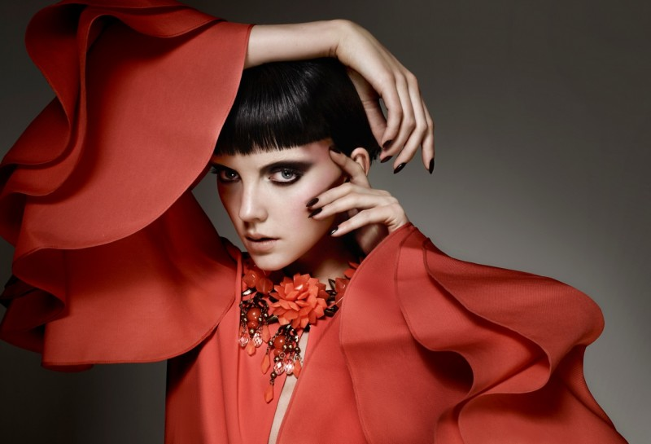
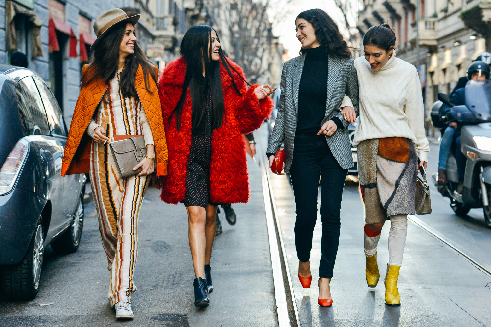

Her şey önce bir hayal ile başladı. Sonra o hayali bir amaç ve vizyon ile hayata geçirdik: İnançlarına göre bir giyim tarzı benimsemiş dünya kadınlarına, tam da istedikleri gibi iyi görünüp, iyi hissetmeleri için stil sahibi alternatifler sunduk. Myfashion.com, 2011 yılının Anneler Günü’nde açılışını yaptı. Doğum yerimiz İstanbul ve 140 ülkeden müşterilerimiz var. Yayınlarımızı Türkçe, Arapça, İngilizce, Fransızca, Almanca olmak üzere 6 dilde gerçekleştiriyoruz. Dünyanın 5 kıtasına her gün binlerce kargo gönderiyoruz. Her ay dünyanın dört bir yanından yoğun ilgiyle müşterilerimizin ve satıcılarımız 2016’da İstanbul’da, 2017’de Londra ve Türkiye’de Modest Fashion Week’ler düzenleyerek; 2018'de Endonezya'daki Jakarta Modest Fashion Week sponsorluğunu üstlenerek, küresel bir moda sitesi olduğumuzu tüm dünyanın fark etmesini sağladık. 2019'da Modest Fashion Week'i, tekrar doğum yeri olan İstanbul'a taşıdık. Bu yoğun ve adanmış çalışma, müşterilerimizin bize duyduğu güven ve sevginin ötesinde ödüller de getirdi. 2016’da Reuters tarafından dünyanın en popüler giyim sitesi seçildik. 2017 yılında “Fashion Economy Award”, Myfashion.com’a verildi. 2018’de “International Business Excellence” ödülünü kazandık. 2021 ylı başında ise ABD Merkezli düzenlenen ve 90 ülkeden katılımcılar tarafından oylanan organizasyonda “En İyi Moda Şirketi / The Best Fashion Company” ödülüne layık görüldük. Bugün, ülkemizin ilk uluslararası online alışveriş sitesi ve e-ihracat şampiyonu olarak, Türkiye'nin hazır giyimdeki gücünü dünyayla buluşturmanın gururunu yaşıyoruz. Müşterilerimizin sevgisi, güveni ve yakın ilgisiyle büyümeye devam ediyoruz; büyürken de start up ruhumuzu koruyoruz.
Müşterilerimiz istediği tarzı,kumaşı,rengi,modeli bizlere tarif edip veyahut çizerek bize bildirebilirler bizde istekleri doğrultusunda modacılarımız aracılığıyla müşterilerimize en iyi şekilde hizmet sunmaya hazırız.
 